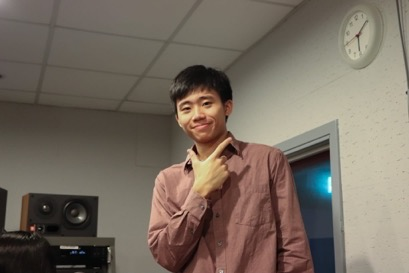
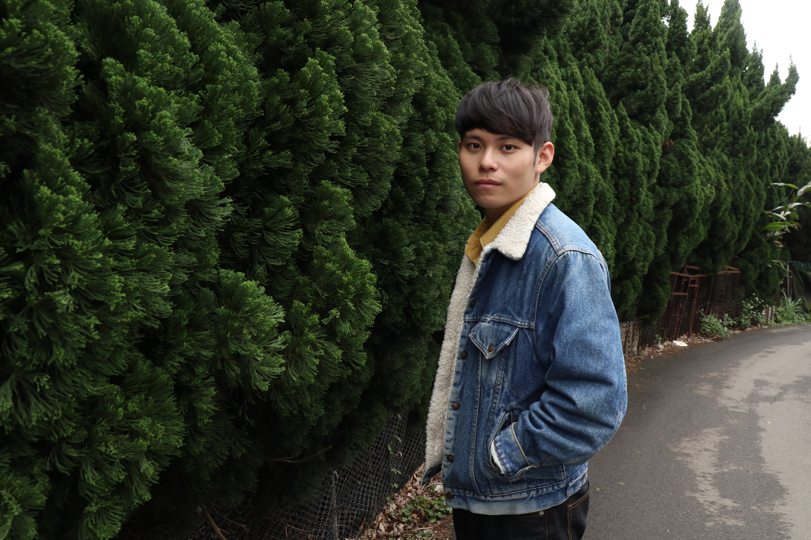
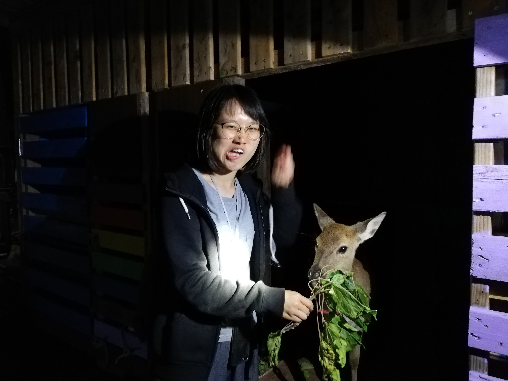

創作者介紹
回到首頁
企劃簡介
認識作者
網頁設計
我是王昱翔，
目前就讀政大新聞系，大三上時曾任藝文新知版記者。
待過政大學聲、待過新聞實驗室，歡迎對這三個單位有興趣的人前來詢問~
來訪時，記得奉上一張S.H.E或田馥甄的專輯。
素材蒐集
我是士哲，
作為一個新聞系的學生，嘗試努力去描述本系平常在做什麼，希望藉由這個網站讓大家知道我們作為記者的......專業訓練！


互動設計
我是謝承學，
目前就讀政大新聞系三年級，在大學報擔任記者，也在政大影音實驗室擔任助理，我吃飯很快，講話很乾，英文很爛，每次交作業都很趕。
文案撰寫
我是邱于瑄，
目前就讀政大新聞系，也是大學報的記者。在改稿時，我認為比寫稿更重要的是吃飽，所以我在編輯室無時無刻都在吃，總是拉著大家一起吃宵夜，但怎樣都不會胖，當瘦子真好！

廢物設計
我是倪旻勤，
現在就讀政大新聞系，是大學報的一員，也擔任新聞實驗室助理。平常喜歡看廢片，想要耍廢當米蟲，正在努力實踐事情可以做得剛剛好就好。
P.S.打嘴砲、開黃腔是我戒不掉的癮，希望有志同道合的朋友一同切磋琢磨。